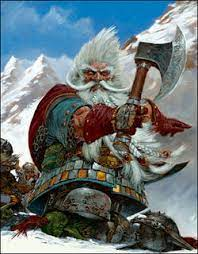

I am a Senior Computer Information Systems major and I was born in Cuba. My life has been filled with interesting and important life events which have led me to this moment.
It is my dream to finally get out of school and make a name for myself in the world. I look behind at my life with regret, but at the future with hopefulness.
I now have the skills required to push myself onto better opportunities in the future.
I've always wanted to see more and do more. I wanted to become an astronaut and soar above the skies onto places no one has ever been before. Hopefully I get to do that in this lifetime.
I enjoy exploration, engineering of things (I got that from my dad) and to fix things. I am a very utilitarian person, loving to find the use in things (no matter how small).
I love to play games and sometimes I play too much of them. I like to keep busy with work related to my field and helping other people. I have a lot of things I want to do but have not had the chance to. I enjoy looking at the stars.
It is going to be a scary process to move to the real world now.
This is my favorite character:
The White Dwarf!
